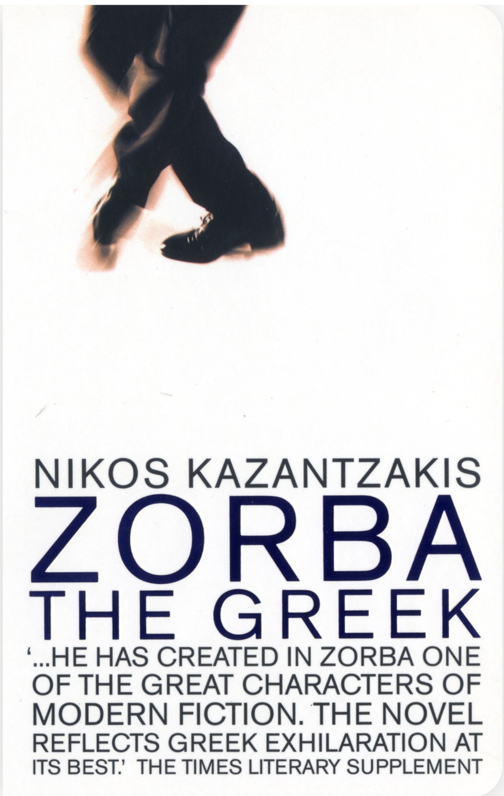

Zorba the Greek by Nikos Kazantzakis
Published: 1946
An ode to the virtue of folly. The narrator of this book is a bookish measured man, principled deeply immersed in the world of philosophy and theology. Through chance events he ends up running a mining operation on the agean sea with Zorba. A stout illeterate hairy old man whos life is marked by a fullness and pursuit of beauty above all else. The only reason this bok was hard to read is becuase it made me constantly want to put it down and buy a plane ticket to greece.and live with the fullbody recklessness that Zorba calls the narrator to.
Notable Quotes
- "A man needs a little madness, or else... he never dares cut the rope and be free." - Nikos Kazantzakis
- "I felt once more how simple and frugal a thing is happiness: a glass of wine, a roast chestnut, a wretched little brazier, the sound of the sea. Nothing else." - Nikos Kazantzakis
- "Look, one day I had gone to a little village. An old grandfather of ninety was busy planting an almond tree. ‘What, grandfather!’ I exclaimed. ‘Planting an almond tree?’ And he, bent as he was, turned around and said: ‘My son, I carry on as if I should never die.’ I replied: ‘And I carry on as if I was going to die any minute.’ Which of us was right, boss?" - Nikos Kazantzakis
- "God changes his appearance every second. Blessed is the man who can recognize him in all his disguises." - Nikos Kazantzakis
- "Life is trouble. Only death is not. To be alive is to undo your belt and look for trouble." - Nikos Kazantzakis
- "You have everything but one thing: madness. A man needs a little madness or else - he never dares cut the rope and be free." - Nikos Kazantzakis